UDN
Search public documentation:
SampleMatineeTips
Interested in the Unreal Engine?
Visit the Unreal Technology site.
Looking for jobs and company info?
Check out the Epic games site.
Questions about support via UDN?
Contact the UDN Staff
Sample Matinee Tips
Document Summary: Several Matinee examples demonstrating various Matinee effects can be found here. Document Changelog: Last updated by Michiel Hendriks, for minor changes. Previous update by Tom Lin (DemiurgeStudios?), for build 2107. Original author was Tom Lin (DemiurgeStudios?).Introduction
The majority of this project deals with standard matinee tropes. The usual restrictions, setup, and pitfalls apply. There are, however, some special new classes and code. Primarily, this allows an actor to rotate, and to have particles attached to it. These files are attached at the bottom of this document. The screens provided are from simple examples that are also attached to this document. Without any further ado, let's dive in.Goals
My goal for this project was to create a relatively simple string of animations & effects, in conjunction with shots of 4-5 logos created for this purpose. I attempted to cover a fairly wide range of actions/effects, given the short total running time of the matinee sequence. In no particular order, some of the points I wanted to cover are as follows:- Force matinee to launch without starting the player in the game.
- create a pawn in the world and make it move from point to point.
- make a pawn do actions, such as shoot/talk.
- rotate the logos, or various parts of them.
- make a pawn die and go into karma physics
- make a dead pawn with karma physics collide into the logos.
- make particle systems appropriate to the logos, and place them appropriately.
- attach the particle systems to the logos, which will be spinning.
Launch Matinee into Movie Mode
The first thing to do (or the last, depending on your point of view) is to make your matinee movie launch immediately when you play the map. If you don't, then the game will assume you want to run the movie as a deathmatch, and will drop you into the level. This can be useful, since from this viewpoint you can inspect the bits of your level at your leisure; you may want to have the original mode on for debugging, then switch to Movie Mode at the very end.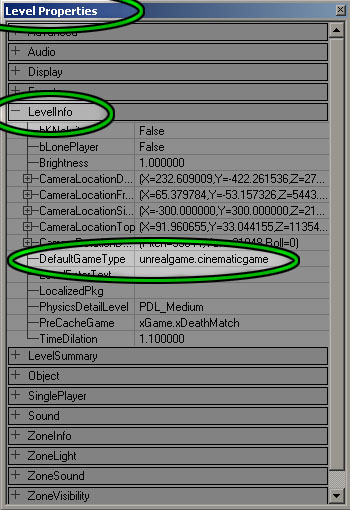
To make a nice smooth entrance into the movie, you'll have to do two steps. First, right click on one of the viewports and open up the Level Properties. Follow this tree inside the Level Properties box: LevelInfo > DefaultGameType. In the DefaultGameType field, enter this: unrealgame.cinematicgame. This will make the game bypass the standard deathmatch entry.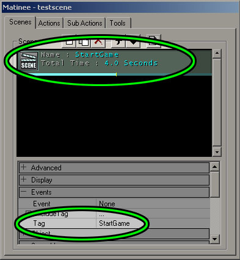
The second step is a little easier. Open up Matinee Mode, and locate the scene that affects the camera you want to use. (The setup process for making a matinee scene has been gone over previously in the MatineeExample tutorial online) In your Events > Tag field, enter StartGame as the tag. This will make the camera play immediately, and in combination with the previous step, will make a seamless opening into Unreal.Make a Pawn, Make Him Move
Adding the Pawn
To add a pawn to the level, you really want to add your game's pawn subclass. In UT2004, the subclass is called xPawn. To add this, follow these steps.- Open the Actor Classes browser. You can use the menu (View > Show Actor Class Browser) or just click on the icon to open it.
- Open the tree in Actor Classes following this path: Actor > Pawn > UnrealPawn > xPawn
- Click on xPawn to highlight it.
- Go to one of your 2D windows and right-click. Select the option Add xPawn here.
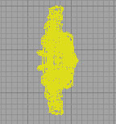
If you did these steps properly, you'll see your pawn drop into the level.Adding the Scripted Sequence
If you see your pawn in the level, congratulations. Don't get too cocky yet, though - the pawn is only half of the equation. We still need a ScriptedSequence to make the pawn do things, such as walk and talk. The ScriptedSequence is also in the Actor Classes browser, in the tree path: Actor > Keypoint > AIScript > Scripted Sequence. Click on ScriptedSequence to highlight it. Go to one of your 2D windows and right-click. Select the option Add ScriptedSequence here.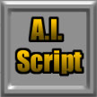
Connecting the Scripted Sequence and Pawn Together
Good job. Now that you have the pawn and the ScriptedSequence, you can hook them together. To do this, you need to change just 2 fields. The first field is in the properties of the ScriptedSequence. Under Event > Tag, change the name of the ScriptedSequence. The next field is in the properties of the pawn. In the AI > AIScriptTag field, put the name that you just gave the ScriptedSequence.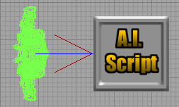
If you did this step correctly, you should see a blue line connecting your pawn with its controlling ScriptedSequence controller. This means that they're hooked to each other, and ready to go. Note that you can control more than one pawn at once with this method, if you want a group of pawns to do the same thing. There is one last step you need to do - this is also in the ScriptedSequence properties. Under the AIScript > ControllerClass property, select ControllerClass and click the drop-down arrow. From the drop-down list, select AIController. Ok, now we're finally ready to make this pawn move.Making the Pawn Walk
Before getting into the nitty-gritty details, decide where you want your pawn to walk. Once you decide on a path for your pawn, lay down some pathnodes for your pawn to follow. These are in the actor browser, Actor > NavigationPoint > Pathnode. Click on Pathnode to highlight it, and right-click to add one to the level. You can repeat this process to add more, or simply replicate the existing one. While it's not absolutely necessary to get a path to work, it's a good idea to give the individual nodes unique and descriptive names. Just change the Events > Tag property. To make the pawn move around, go into the ScriptedSequence properties. Much of the work in getting the pawn to move will be done in the AIScript > Actions fields, so get comfortable with them. They're a little bit confusing at first, so I'd recommend doing this part hands-on as you read this section. Ok, here goes. So, you have the ScriptedSequence properties open, AIScript > Actions is opened up as far as it can be, and there is nothing there. To add an action to this sequence, first click on Actions and look on the right side of the properties window. Two buttons will appear, Empty and Add. You probably don't want to empty out the stack too often, but you will be using that Add button quite a bit. Click it.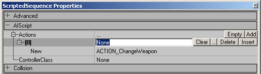
Take a look at this picture. This is what you should be looking at, if you are following along. We've just added an action to the script, but the engine still doesn't know what we want to do with it. By default, it has ACTION_ChangeWeapon selected, but that's not set in stone yet. Open up the drop-down list, and select Action_MOVETOPOINT. Notice that next to the drop-down menu button there is a button labeled New. Once you click this button, you will `burn in' whatever action you have selected. Hitting that New button tells UnrealEd that yes, this is the action I want. You can change the type of action (select the action and hit the Clear button), but the 2-step clearing process prevents accidental changes. Before you go any further, take a look at the picture again. See the field ControllerClass? Click on the line, then change it to Class'Engine.AIController'.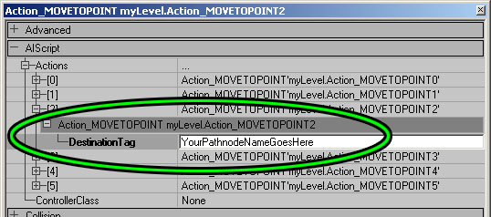
So, you've just set an action, and now you get yet another sub-field, DestinationTag. This field should be filled in with whatever you decided to name your pathnodes - this is why we gave them unique, descriptive names. This field is a little strange, in that there is no Use button next to it. You'll have to type in the name of your pathnodes, so make sure to get it right. Once you do this for one of the pathnodes that you've set, it's simply a matter of repeating the process for each following node. Start by adding in a new AIScript > Action, and finish up each point by typing in your pathnode name. WHEW. If all went well, then you have a pawn walking around in the level. If you want to skip all of that and see it working, then you can download an example here.Make the Pawn Perform Actions
This section is based heavily off of the last, making the pawn move. Basically, if you have read and understand the previous, then you're well prepared for this. If not, I'd strongly suggest reading about the pawn moving process. The first few steps of this are exactly the same as before. Create a pawn, create a ScriptedSequence, and hook them up. In the same field as before (ScriptedSequence properties > AIScript > Actions) simply choose a different action from the drop-down list, and `burn it in' by hitting the New button. This is almost self-explanatory, since to make the pawn move you have to search through this rather extended list of possible actions. In the provided example, I've got a simple Action_CROUCH that kicks in after the pawn finishes running to the second pathnode. Explaining each possible action is beyond the scope of this document, but luckily there is already a doc that does exactly this. The ScriptedSequenceActions guide is an excellent reference, refer to it if you wish to investigate further. For completeness, I'll step through making a pawn talk, since having accurately synched voice was a component of my matinee project. First of all, I simply added another action. For simplicity's sake, I used action_PLAYLOCALSOUND instead of action_PLAYSOUND, since action_PLAYLOCALSOUND doesn't take distance from the pawn into account. The rest of the procedure is fairly obvious, if you've been following along. I set the new action, then am presented with a new field, which is where I specify which sound to use.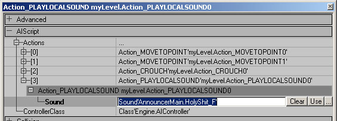
Going into the sound browser, I can select a sound, then return to the action list and hit the Use button in the Sound field. My pawn will now run, crouch, and play a sound. Easy as pie. If you want to change which sound is played, just go into the sound browser, highlight a new one, and hit the Use key in the action list again. If you want to see the results without all the work, download this zip file.Rotate Meshes
Attached to this document you will find two new script classes. Upon hearing that I wanted to have meshes rotate (and with particle systems attached), the programmers I work with whipped up these two little bits of code. Have them integrated into your build of UnrealEd before you continue. First, go to your actor browser. In Actor > StaticMeshActor there is one selection, MoveableStaticMesh. Highlight it, then go to a viewport and add in the actor. You'll see that it looks like one of those funky animal heads.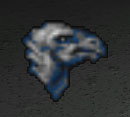
I wanted a mesh to rotate, I'm betting that you will as well. There are two fields to change in this actor's properties. Open the properties for it now, and open up the Display section. First of all, DrawType should be changed away from DT_Sprite to DT_StaticMesh. Next, find the StaticMesh field and click on it. Go to your static mesh browser, pick an appropriate mesh, and then return to the properties window. Click the Use button, and you should see your chosen mesh appear in your viewport.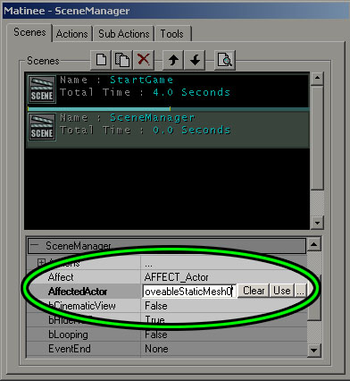
To make this mesh rotate, we'll be using the Matinee mode to control it. First, open up the Matinee window, and create a new scene. Right away, we need to change some fields. In the SceneManager category, change the field Affect from AFFECT_ViewportCamera to AFFECT_Actor. Next, make sure your moveable static mesh is selected, and go to the field AffectedActor. Hit the Use button. To trigger the scene, I'm using the StartGame scene we created earlier; there is a SceneManager > EventStart field in the scene's properties. Put the name of the new scene in that field, it's called rotaterockets in this example. Go to the Tools tab in the Matinee window. Insert two Interpolation point & Actions. You should see these appear in your viewports as camera icons. Go to the top viewport and rotate one of the icons 360 degrees, so that the red arrow points in the SAME direction. Your mesh and Interpolation Points should look something like this.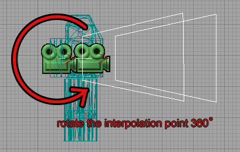
Now, go to the Actions tab, select the first action and go to the SubActions tab. Add a SubActionOrientation to it, and change the CamOrientation Field to CAMORIENT_Interpolate. Repeat for the second interpolation point.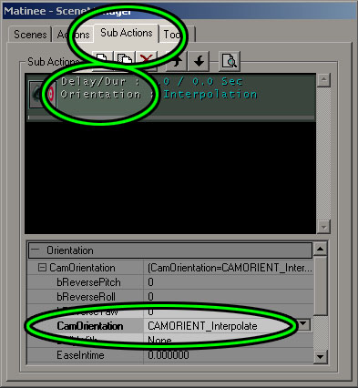
This selection tells UnrealEd that you'll be using the actual camera orientation to determine what direction the controlled object will be facing. (This controlled object can be the viewport or an actor, depending on which you specified in the SceneManager) Finally, go to the first action, and set the Time > Duration field to some value, for how long you'd like the object to rotate. The second action's time should be left blank. If you play this map now, then your object should rotate once, then stop. Also, if your interpolation points aren't directly on top of each other, then your mesh will float around a little. To make the rotation happen over and over, go to the scene properties for rotaterockets. In section SceneManager, set blooping to True. Make sure your interpolation points are placed right on top of each other in all viewports, and it should rotate smoothly. If you want to take a look at a working example of this rotation setup, download it here.Make a `Dead' Pawn with Karma Physics
This is another task that I had some help with from programmers. Make sure that you've integrated the script classes provided in this doc before you attempt this section. This is a relatively easy task, much more so than the preceding. Open your Actor Classes browser, and find the *KActorSpawner. Highlight this option, and add the *KActorSpawner into your level. Open its properties, and make note of its Events > Tag field. Change the tag, if you want. Now, set it to be triggered. Again, I'll use the EventStart field from the StartGame scene. That's it, you're done. Run the level and check out the falling action.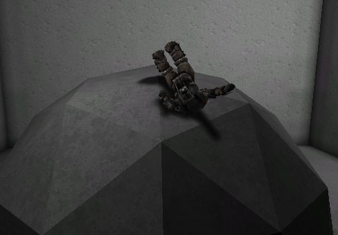
It's worth mentioning that you can change the initial rotation of your falling object, as well as change the spawn delay. Movement and Spawner fields in the actor properties are where these values can be changed. Unfortunately, no support for changing the karma actor mesh was implemented. It should be easy enough for a programmer to change, but our code does not currently have this functionality.Make Environmental Static Meshes Respond to Karma Physics
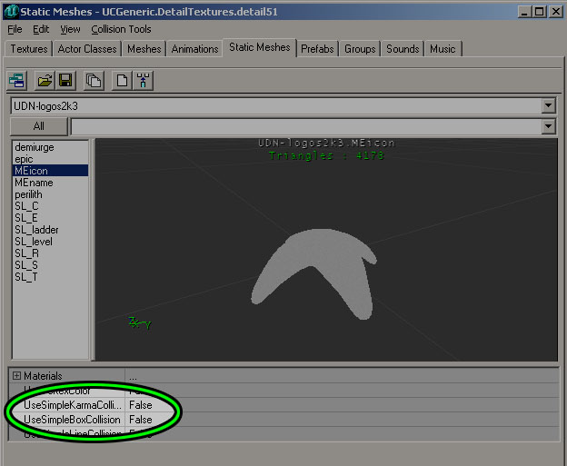
This is super easy. If you have a static mesh that you want to receive Karma Physics, simply change these two fields in the Static Mesh browser: UseSimpleKarmaCollision and UseSimpleBoxCollision. Otherwise, a karma-enabled actor will fall straight through the mesh. Here is an example map with Karma Collision on a pawn.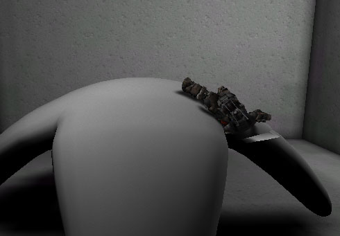
Spinning Meshes with Particle Systems
This also required some custom code, provided by programmers. Again, make sure that you are integrating the code from this doc before you try out the following. To add a spinning mesh with emitters attached, go to your Actor Browser and click on *AttachPartSysThing. This isn't in any sub-category, it's close to the top of the total list. Now, right-click and add it into your level. That's it, it should work immediately.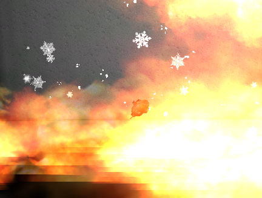
The particle systems are offset from the pivot point of the mesh, so some trial and error may be in order before you get your particles correctly placed. In the properties of the actor, look under Attach to change these values. The mesh is spinning by default, you may want to change this. In the actor properties, change the Movement > RotationRate values to alter the spinning. Caution: there is no support in the GUI for changing which particle system you wish to attach. You'll have to change those values in the code itself - again, ask a programmer to do this for you. Here is a demo map with the particles attached to a mesh. That's it - most of the effects and actions in the logo project are covered in these examples. To take a look at the logo project and download the custom classes, click here.Thanks to Eric `StarFury' Bakutis. His UT2K3 Machinima Creation Tutorial was the basis for much of the playerpawn methodology. His Machinima website: http://www.legionslayer.com/machinima/Machinima_Tutorial.html